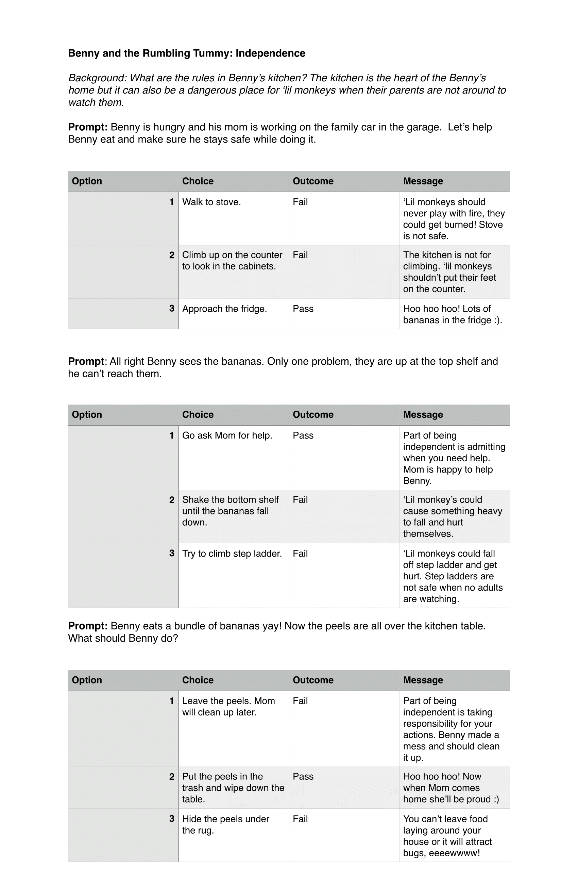
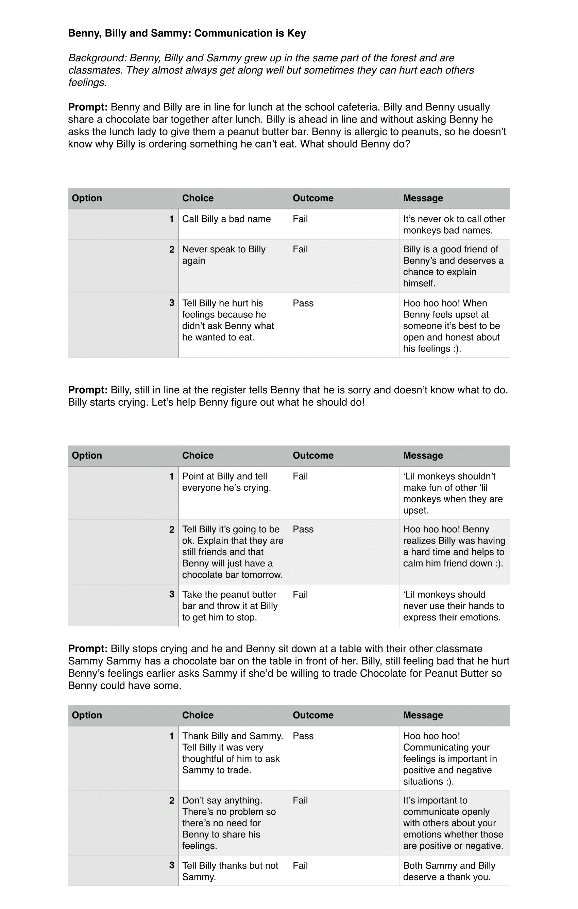
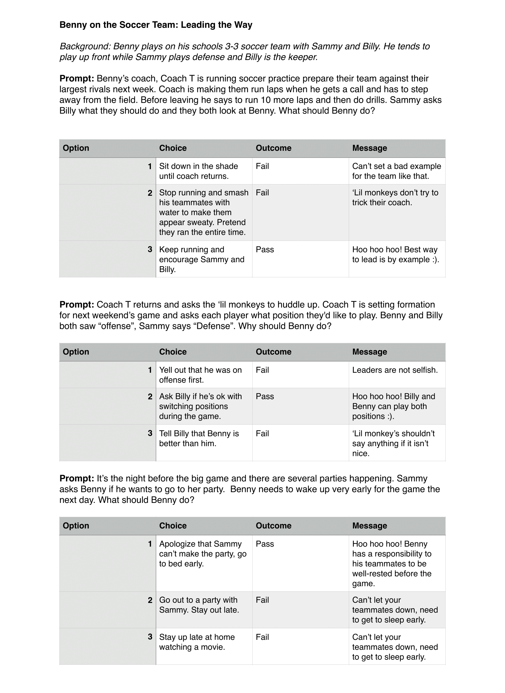

Interactive Stories
The story that I was most inspired by was Walter the Farting Dog. Aimed at ages 7-9 this book features a flatulent dog Walter, who goes on a series of adventures. The stories tie together through Walter, but allow the reader to discover new things which are not connected. This is the type of model that I want to model Benny the monkey after.
The first step I took was to decide what I felt the most important soft skills to focus on. After doing some reasearch into what skills made for the most sucessful employees, I decided to focus on the list below.
- Independence
- Communication
- Leadership/Time Management
Next I outlined the stories through text. This allowed me to get a clear outline of where I wanted to story to go, and what soft skill I wanted the user to learn.
  Physical Component with User Input
Based off the feedback that I recieved last week, I wanted to user to be able to interact with the physical componenet of the interactive story book. This would increase user interaction and make the user more likely to continue to play.
Final Project Prototype 3 from roxanne farkas
Final project monkey from roxanne farkas
Final project user input prototype from roxanne farkas
User Testing
After these implementations I ran some user testing. The light which responds to user input over the monkeys heart recieved positive feedback. Testers said like it felt like they were able to control the monkey's heartbeat.